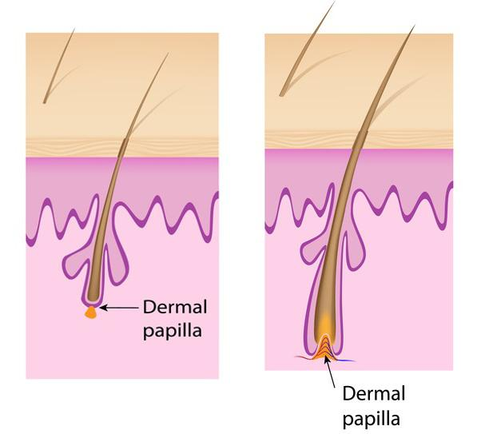

Mark McCullough Kutató
kifejlesztett egy kezelést
a hajdúsításra
Az új módszernek köszönhetően immáron mindenki számára megnyílik a lehetőség, hogy megállítsa a hajhullást és dúsabb frizurára tehessen szert - állítja Mark McCullough - a Zürichi Higiénia és Szépség Intézet vezetője.
A hajhullás megállítása és a haj megerősítése lehetséges. Ez nem csak vágyálom, hanem tudományos tesztek eredménye. Minden résztvevő megerősítette, hogy a teljesen fájdalommentes és az egészségre biztonságos kúrával lehetséges:
- a hajhullás megfékezése - eredmény 12 vagy akár kevesebb nap után,
- az új haj növekedésének serkentése és a dúsabb frizura,
- táplálni a hajat és javítani annak kondícióját, hogy az egészséges, erős és csillogó legyen,
"Lényegtelen, hogy 20 éve vagy tegnap óta okoz gondot a hajad állapota" - mondja Mark McCullough. "Mindegy, hogy a hajhullást szeretnéd-e megállítani, vagy csak jobban szeretnél kinézni. Mindegy, hogy vitaminhiányos étrend, stressz, betegség, hormonzavar vagy más oka van a problámádnak.A hajhullást meg lehet állítani!
Ne hidd el, hogy együtt kell vele élned. Ha akarod, megmutatom a módszert ami megerősíti a hajad és felgyorsítja az új, erős hajszálak növekedését. A kúra eredménye csodával határos gyógyulásnak tűnhet, de...
Mindegyiket képek és vizsgálati eredmények bizonyítják
"Amikor megmutattuk a trichológusoknak (hajápolás és hajbetegségek specialistái) a kúra eredményéről készült képeket - sokkot kaptak tőle.A hajritkulás eltűnt, a helyén új, erős hajszálak jelentek meg. Hosszabb lett az anagén növekedési fázis (ezalatt nő a haj a legintenzívebben). A sérült hajstruktúra 100%-ban regenerálódott. Javult a kollagénburok kondíciója is. Ez a struktúra minden hajgyökér körül megtalálható, és a hajszálat a fejbőrbe "horgonyozza le" - folytatta Mark McCullough.
"A trichológusok a szemüket dörzsölték az ámulattól, amikor meglátták a fejbőrről készült képeket, a kúra előtt és után - meséli Mark McCullough. "A képeken tökéletesen látható volt, hogyan erősödött meg a haj struktúrája. A hajhagymák és a kollagénburok tápanyagellátása és a fejbőr vérkeringése javult. De ez még nem minden, a vizsgálatok kimutatták, hogy a hajhagymák regenerációs és szövetalkotó képessége jelentősen javult, tehát gyorsabban nőtt az új haj ".
ELŐTTE
UTÁNA
A jobb regeneráció és a hajhagymák erősebb tartása fékezik a hajhullást és gyorsítják z új hajszálak növekedését.
Mit fedeztek fel a zürichi tudósok?
„A természet azt akarja, hogy a szervezeted tökéletesen működjön” - magyarázza McCullough.
"A szervezetünk elboldogul a csontnövesztéssel, a sebek begyógyításával, egyes szervek hiányával és még a daganatos sejteket is legyőzi. A hajhagymák regenerációja és a hajnövekedés serkentése sem kivétel. De csak akkor, ha hagyjuk, hogy a természet tegye a dolgát.
Szabadítsd fel a természet erejét!
"A legnagyszerűbb megoldást mindig a természet anya nyújtja" - mondja McCullough. "Tökéletes példa erre a penicylin - ez az elképesztő antibiotikum 90%-kal csökkentette a bakteriális fertőzések okozta halálozást! Nem laboratóriumban alkották meg. Egy közönséges gomba hozta létre. Mindenki csak penészként ismerte. Hasonló a helyzet a hajhullással is. Nem az ember találja ki a hajerősítés legtökéletesebb módját, a természetben kell keresnünk a megoldást. Csapatomat is ez az elv vezérelte."
Több hónapos tesztelés után felfedeztek egy különleges keveréket, ami hajregeneráló gépezetté alakítja a szervezetet. Nem csak a haj struktúráját erősíti meg, hanem a hajhagymák gyökereit is, és elkezdődik az önregeneráció folyamata. Ennek köszönhetően olyan hatékonyan szünteti meg a hajjal kapcsolatos problémákat, ahogy a penicylin a baktériumot.
Ezt a tudósok egy különleges VitaHair Max elnevezésű készítménybe tették. Ez a leghatékonyabb fegyver a hajhullás ellen, amit maga a természet alkotott.
Káli Anna
Nagyjából 2,5 éve kezdődtek a problémák a hajammal, 2 hónappal gyermekem születése után. Ezalatt felkerestem: 3 bőrgyógyászt, 2 endokrinológust, számtalan fodrásznál és kozmetikusnál megfordultam. Hormon és fejbőrvizsgálatot is csináltattam. Miután már egy éve jártam a specialistákhoz, és az ajánlott kezelések SEMMIT sem segítettek...
A készítmény 2 hetes használata után csökkentette a hajhullás mértékét és már nem is gondoltam rá állandóan. Úgy éreztem, hogy ismét vonzó vagyok, koromnak megfelelően nézek ki és nem 10 évvel idősebbnek. Sokat nevettem, találkoztam ismerőseimmel és nem aggódtam a megjelenésem miatt. Egy hónap után a hajam egyáltalán nem hullott, a frizurám dúsabb volt, mint bármikor korábban. Olyan gyorsan szabadultam meg a hajammal kapcsolatos gondoktól, hogy sokan nem is akarták elhinni, hogy nem műhajat hordok. Egyszerűen fantasztikusan érzem magam
Hogy megfékezzék a hajhullást és megerősítsék a haj szerkezetét, a páciensek innovációs tápláló terápián mentek keresztül. Ezalatt folyamatosan a VitaHair Max készítményt használták, napi 2-szer.
McCullough biztosítja, hogy:
"Az új kúra elvégzése után várhatóan a hajad erősödni kezd már az első naptól kezdve. Nem fogsz káros vegyszereket használni, nem kell a szakorvosra várakoznod...
Nagyjából két hét után megszűnik a töredezettség és a hajhullás. Nem kell kerülnöd a szárítást, sem speciális kozmetikumra sem lesz szükség. A kopaszodás már nem okozhat többé félelmet. De ez még nem minden! A kúra elvégzése után észrevehető a jelentős mennyiségű új hajat, a frizurád 67%-kal dúsabb lesz. Sűrű, egészséges és fényes lesz a hajad."
A VitaHair Max nem csak Európában népszerű. Használják a kopaszodással és ritkuló hajjal küzdők az USA-ban és Kanadában is.
A VitaHair Max készítmény független szakértők által lett bevizsgálva, hatékonyságát a SRIT (Svájci Trichológiai Kutatóintézet) oldalán publikált beszámoló is elismeri. Magyarországon még újdonságnak számít. Csak az interneten lehet megrendelni, a kedvezményklubba való csatlakozással. A készítmény hatásáról itt olvashatsz többet .
Itt a különleges akció portálunk Olvasóinak: az alábbi linkre kattintva megkapod a VitaHair Max-t, a kedvezményklub tagjainak járó 50%-os kedvezménnyel együtt. A különleges ajánlat határideje 14-04-2020.
Kattints ide a VitaHair Max átvételéért, szabadulj meg a gyenge haj okozta problémáidtól
Különleges lehetőség kedden 14.04.2020
HEALTH-REP 8/14

Népszerű cikkek

Keress fel bennünket a Facebookon

Facebook Social Plugin


~mariann_kisasszony • hétfő 6.04.2020, 12:59:58 Válasz
Próbálta valaki?~András • hétfő 6.04.2020, 13:51:39 Válasz
Hello. Szörnyű állapotban van a hajam, egyre gyorsabban kopaszodom, nagyon idegesít. Adjatok valami hajerősítő tanácsot pasiknak.~ elgondolk1985 • hétfő 6.04.2020, 14:13:20 Válasz
Én már próbáltam mindenféle készítményt, de ettől tényleg fényesebb és erősebb lett a hajam. Ez vagy egy csodaszer, vagy egyszerűen egy még jobb készítmény. Ezen kívül időt kell fordítani a hajápolásra~Viktor • hétfő 6.04.2020, 14:53:42 Válasz
Valószínűleg arról van szó, hogy a Duo Olaj helyes táplálkozással és több vitaminnal kiegészítve hatásos lehet. Én személy szerint nem próbáltam.blair • hétfő 6.04.2020, 20:35:01 Válasz
Nagyon töredezett a hajam, minden reggel összeszedem szedegetem az eltört hajszálaimat a párnámról, tudjátok milyen a festés, egyenesítés, rossz táplálkozás. Ez segített már valakinek? Írjon mindenki, aki tényleg ismeri ezt a szert, a legjobb ha használta is.~cicaaaaaaaaa • kedd 7.04.2020, 10:56:42 Válasz
A cím alapján valami hollywoodi titkos módszerre számítottam, ez meg egy tapasz, természetes összetevőkkel , nagyon érdekesnek tűnik, próbálta már valaki?~Daniella • kedd 7.04.2020, 13:18:23 Válasz
AZ ANYUKÁMNAK EZ BEVÁLT, ÉS MINDEN MÁS NŐNÉL IS BEVÁLIK, ANYU HAJA OLYAN ERŐS LETT, HOGY MÁR EGYÁLTALÁN NEM HULLIK ÉS ÚJ SZÁLAK NŐNEK DRÁGA MASZKOK ÉS MÁS ÉRTELMETLEN TANÁCSOK NÉLKÜL:dr_ke • kedd 7.04.2020, 15:40:04 Válasz
Én erre ráteszek egy lapáttal. Nemrég volt egy gyógyszerészeti előadásom, amin szóba került, hogy ezek az összetevők tényleg erősítik a hajat, már a gyökerétől, táplálják a sérült hajszálakat. Számos esetben új haj is nő. Természetesen fontos a fejbőr megfelelő ápolása.K_A_T_A • szerda 8.04.2020, 13:01:45 Válasz
KONKRÉTUMOKAT EMBEREK. MAROKSZÁMRA VESZTEM EL A HAJAM ÉS IGAZI MEGOLDÁST KERESEK. ÍRJON VALAKIM AKI TÉNYLEG HASZNÁLTA MÁR EZT A TERMÉKET?-magdi • szerda 8.04.2020, 14:23:26 Válasz
Nagyjából 2 hete használom ezt az olajat, egyelőre tényleg sűrűbb lett a hajam, a tapintása is puhább. Nagyon ígéretes, tényleg elégedett vagyok.~mariann_kisasszony • csütörtök 9.04.2020, 11:45:07 Válasz
Az oldalukon elégedettségi garanciát írnak. Tudjátok mit rejt ez valójában? Tényleg nem fog hullani a hajam? Nem szeretem a zsákbamacskát, nincs rá sok pénzem. Garancia kéne, hogy ha már kifizetem, a hajam rendbe jön. Elég sokat adtam már ki arra, hogy a hajszálaim megerősödjenek...~Elvis_Zeg • csütörtök 9.04.2020, 13:06:48 Válasz
Egyelőre nem tudok beszámolni hosszú távú tapasztalatokról, még csak egy hete használom, de nem hiszitek, az első 7 nap után szinte teljesen megáll a hajhullás! Lassan férfiasabbnak is érzem magam :)Szőke • csütörtök 9.04.2020, 16:28:29 Válasz
Én rendszeresen használom a VitaHair Max-et. Egy csomaggal kezdtem. A hajam egyre szebb, kevésbé töltődik fel elektromosan és csillogóbb is. Szerintem ez a legjobb módszer a dúsabb haj elérésére, amit valaha használtam.Nincs semmilyen mellékhatása. Mi több, nem volt szükség más drága kozmetikumokra és speciális kezelésekre. Őszintén ajánlom.~Trisztán • csütörtök 9.04.2020, 18:18:59 Válasz
Hallottam, hogy a hajhullás ellen a diéta a legjobb, de érdemes valamit közvetlenül a hajra is felvinni, ebben lehet valami?kris79 • csütörtök 9.04.2020, 21:32:11 Válasz
Én is használtam a fent leírt olajat. Minden rendben volt vele, pont ahogy a gyártó írta. Korábban legalább egy éven át szörnyen hullott a hajam, szinte mindent kipróbáltam. Aztán olvastam erről a VitaHair Max termékről. Használtam minden nap, és mellette leálltam a festéssel, nem is vasaltam. Ma már nem panaszkodom, a hajam ismét gyönyörű és dús!~Janó • péntek 10.04.2020, 11:50:10 Válasz
Azon gondolkodom, hogy veszek belőle a férjemnek, ezért lenne elsősorban az urakhoz egy kérdésem. Nem szeretném ha megsértődne és azt gondolná, hogy nem tetszik nekem. Megsértődhet ettől, nem?~Szandi • péntek 10.04.2020, 12:11:51 Válasz
Ha okosan csinálod, nem fog megsértődni.~elégedett • szombat 11.04.2020, 13:33:32 Válasz
Itt szeretnék közbeszólni. A 44 éves feleségem ezeket a természetes szereket használta és már nem érzi magát rosszabbnak másoknál (nagyon hullott a haja). Azóta sokkal nőiesebb és boldogabb, még én is elkezdtem használni a halántékom fölöttszorakozott • szombat 11.04.2020, 16:55:13 Válasz
Lányok, csodálkoztok hogy hullik a hajatok? Mindenféle vegyszerekkel kenegetitek, nem csoda hogy ezt kapjátok cserébe. Először is dobjátok ki a sok szintetikus, mesterséges cuccot és használjatok helyette vala természeteset, parabén nélkülit, az eredmény nem marad el. Az én hajam sem valami erős, és sok problémát okozott a hajhullás , de mióta természetes készítményeket használok, nincs hajszál a kád szélén és a padlón fésülködés után.~K. Katalin • szombat 11.04.2020, 17:16:54 Válasz
Sziasztok, 29 éves vagyok, 2-3 évig szenvedtem a ritkuló hajammal, ráadásul nagyon gyorsan zsírosodott is (naponta kellett mosnom), nagyon vékony volt, a hajhagymák olyan aprók voltak, hogy szinte láthatatlanok voltak (megvizsgáltam a kihullottakat). Ez nem lehet genetikai kérdés, mivel korábban nagyon hosszú és erős volt a hajam. A kezelés használata után már nem hullik a hajam. Festeni viszont még nem fogom, és megpróbálok egészségesen táplálkoznivakond • vasárnap 12.04.2020, 12:38:35 Válasz
TALÁN RÁSZÁNOM MAGAM. EZEN AZ OLDALON ELÉGEDETTSÉGI GARANCIÁRÓL ÍRNAK. EZ VALÓBAN ÍGY VAN? NEM AKAROK KOCKÁZTATNI. KÖSZÖNÖM A GYORS VÁLASZT, NINCS SOK IDŐM. 3 HÉT MÚLVA JOBBAN KELL KINÉZNEM, ESKÜVŐ LESZ A CSALÁDBAN~őőőőőő • vasárnap 12.04.2020, 17:00:16 Válasz
Kattintsatok ide a reklámra és olvassátok el. Elégedettségi garanciát adnak, miért hazudnának? Minden benne van a szabályzatban.~lófarok • hétfő 13.04.2020, 09:51:33 Válasz
Engem ez nem győz meg. Sűrű, szép hajat szeretnél? Kezdj el jó samponokat használni, alvás előtt fésüld ki a hajad, és az isten szerelmére iratkozz fel kezelésekre néha!!!~Kamilla • hétfő 13.04.2020, 10:23:11 Válasz
NA VALAKI ÍRJON VISSZA!!!! LÉGYSZIBéla • hétfő 13.04.2020, 09:51:33 Válasz
Ok, várom a postást. Hamarosan megírom az eredményt.